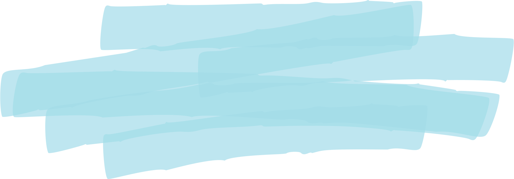
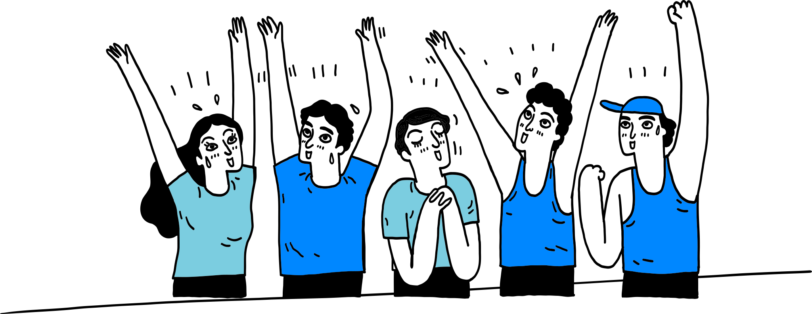
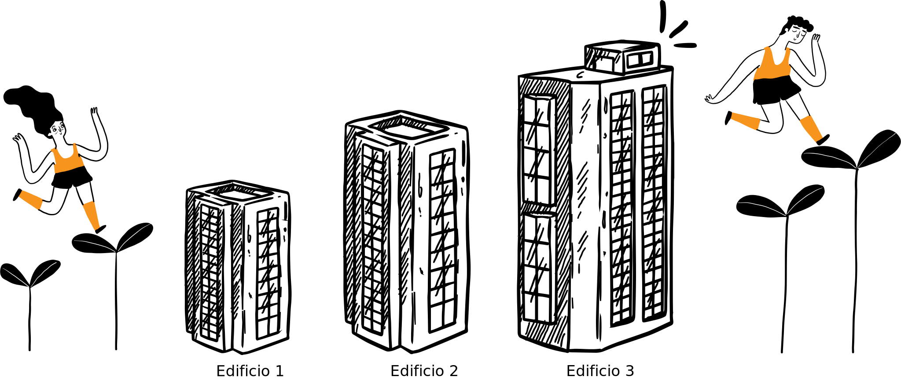
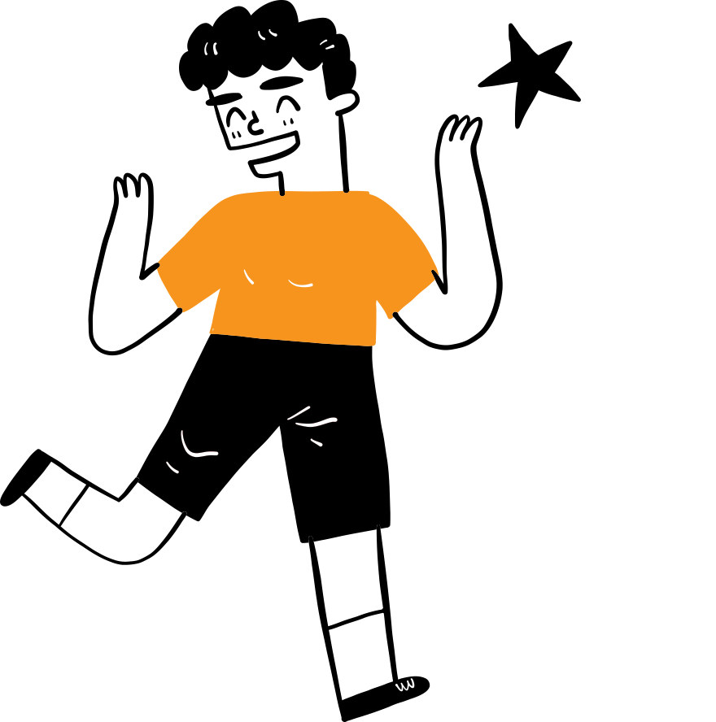
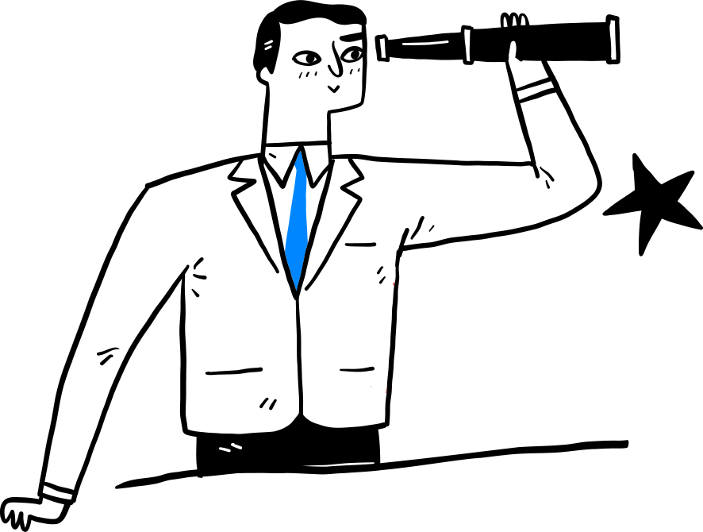
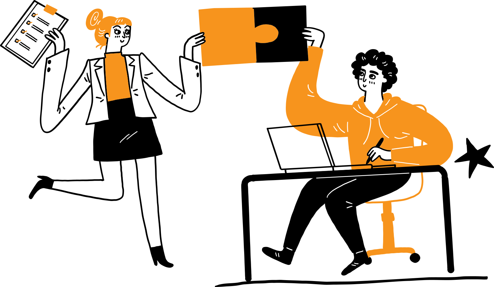
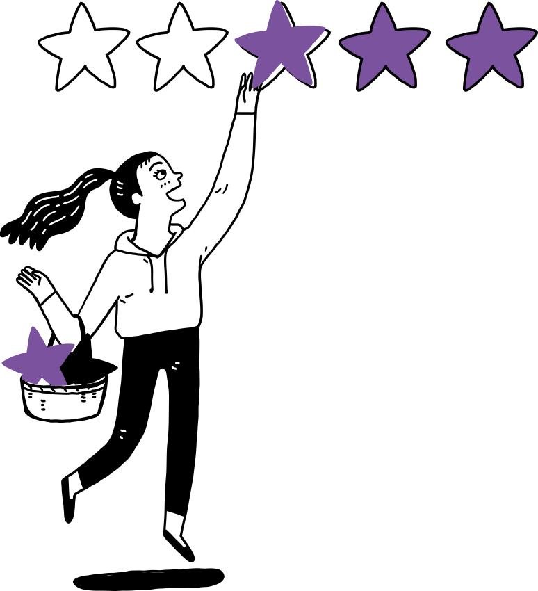

Emprendedores

¿Cómo emprender?
Emprenderás con la guía de nuestra Ruta Emprendedora innovaTE, esta cuenta con seis Fases que se desarrollan durante tres grandes momentos que los llamamos “Edificios”.

Edificio 1: Desarrolla tu idea
emprendedora a fondo, realiza una investigación exhaustiva para identificar y comprender a la perfección
el problema que deseas solucionar y a las personas a las que beneficiarás. Desarrollarás tu solución
tecnológica hasta un nivel de madurez tecnológica TRL 4, así probarás que tus productos o servicios
tecnológicos funcionan a través de las siguientes Fases:
| Fase 1 - Idea: Definirás el problema y su entorno, estas certezas te darán confianza para idear y construir prototipos de la solución. | Fase 2 - Prueba: Tus prototipos deben ser probados para aprender, diferentes retos deben superarse en el laboratorio y en campo para satisfacer a clientes y usuarios, y lograr un producto viable. Esto dará información clave para tu propuesta de valor y modelo de negocio. |

Edificio 2: Realizarás otras
pruebas más exigentes para terminar el desarrollo de tu producto tecnológico, siempre de la mano de
tu
cliente y usuario. Terminarás de diseñar el modelo de negocio ideal, y con esto desarrollarás los planes
de tu empresa, considerando el mercadeo, las ventas, los planes operacionales y financieros, todo
esto a
través de las siguientes Fases:
| Fase 3 - Consolida: Con una idea bien validada, es momento de fortalecer tu modelo de negocio. Aquí se desarrollan estrategias y tácticas sólidas y se construyen los fundamentos operativos de tu empresa. | Fase 4 - Avanza: Estás a punto del lanzamiento. Tus productos y servicios estarán probados y listos para llevarse a los clientes, tus expectativas de negocios estarán claras y las tácticas listas para ser ejecutadas por todo tu equipo de trabajo que debe estar preparado para su mejor desempeño. |

Edificio 3: Este edificio te
invita a crear y enfrentar oportunidades para crecer, pondrás a prueba y mejorarás las capacidades de tu
equipo para el relacionamiento de negocios con socios estratégicos, inversionistas y nuevos
clientes, esto te permitirá entender mejor el panorama competitivo para visualizar las siguientes
etapas de crecimiento:
| Fase 5 - Negocia: En esta Fase te convertirás en el mejor comunicador de tu empresa, tus conversaciones y exposiciones dejarán claro a tus audiencias el valor de lo que ofreces, esto atraerá maravillosas personas y oportunidades para cerrar muchos negocios. | Fase 6 - Crece: Fluirás con tu equipo entre clientes, proveedores y financiadores que se interesarán por tus planes de expansión que llevarán los beneficios de tu empresa de base tecnológica a más personas y empresas que lo necesitan. |

Convocatoria para emprendedores
¡Ya que conoces la Ruta Emprendedora innovaTE, puedes inscribirte y contar con nuestro apoyo para
superar
cada Fase de cada Edificio de la Ruta!
Requisitos:
|
1.
Una idea de proyecto
(un problema que quieras resolver) |
2.
Un equipo interdisciplinario
|
3.
Toda la actitud para investigar, prototipar y probar
|

¡Prepárate, queremos escucharte! Diseña tu pitch de tres minutos para conocer tu investigación
sobre el problema, la solución que tienes en mente y tu equipo…
Pre-inscribeTE ahora
 Mentores de Emprendimiento
Mentores de Emprendimiento
Aprende de los mejores. Nuestros mentores multidisciplinarios están aquí para aconsejarte y guiarte a través del proceso emprendedor

 Fernando Bernal
Experto en mercadeo, finanzas y modelos de negocios.
Alejandro Munar
Experto en mercadeo y evaluación de viabilidad de proyectos de
emprendimiento.
Diego Torres
Experto en física cuántica y emprendimiento.
Alfonso Herrera
Experto en modelos de negocios, desarrollo de competencias.
Fernando Guzmán
Experto en finanzas emprendedoras.
Fernando Bernal
Experto en mercadeo, finanzas y modelos de negocios.
Alejandro Munar
Experto en mercadeo y evaluación de viabilidad de proyectos de
emprendimiento.
Diego Torres
Experto en física cuántica y emprendimiento.
Alfonso Herrera
Experto en modelos de negocios, desarrollo de competencias.
Fernando Guzmán
Experto en finanzas emprendedoras.